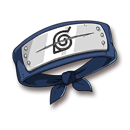
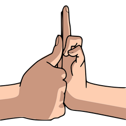

Ihsanak Hyuuga
Genin
- 
- 
Licença Ninja
Identidade:
Nome – Ihsanak Hyuuga
Clã – Hyuuga.
Idade – 14 anos.
Status:
PV (Vida) – 34
PE (Energia) – 8
SAN (Sanidade) – 55
Mov (Movimento) – 11 metros
Equipamento:
Arma (Desarmado)
Dano – 1d8+2d6+3
Margem – 19/20
Crítico – 1d
Proteção
CA – 18
RD – 2
Outros
Dinheiro – 200$
...
...
Linhagem
Jutsu Herdado – 8 trigramas, 64 golpes.
Passiva – Possui o estilo de luta “Punho Leve”, que consiste em: Quando fizer
um ataque
desarmado, pode tirar 1 PE do alvo em golpes normais e 2 PE em golpes críticos. Quando feito
em criaturas do mestre, causam ao 2 e 4 de dano a mais respectivamente.
Habilidade – Byakugan é ativado com uma ação livre e é sustentado com 1 PE
por turno.
Ganha +4 em testes de percepção e consegue ver através de objetos revelando o que está
escondido. Aumenta a margem dos seus golpes desarmados em 1.
Aprimorado (LV 7): Se torna imune a desprevenido.
Perícias:
Reflexo (+4)
Lutar (+4)
Furtividade (+4)
Vontade (+4)
Percepção (+4)
Atributos:
FOR – 1
AGL – 3
VIG – 2
INT – 1
PRE – 3
Habilidades:
Classe – Combatente. (+1 ponto atributo e DB em todos ATK)
Trilha – Artista Marcial.
XP – Nível 2 (0/600)
Trilha:
1. – Seus ataques desarmados são 1 passo mais poderosos, além disso você pode ganhar um
estilo de luta inicial (Agressivo +2d6 de dano).
2. – ...
3. – ...
4. – ...
Jutsus
Jutsus
Slots: 2
DT: 9
Elemento: Raiton (Raio)
- Substituição: Com uma ação padrão prévia, você pode preparar algum objeto para lhe substituir
durante um ataque ou condição que fosse lhe atingir. Uma substituição somente pode ser
preparada durante uma mesma cena e não antecipadamente. Apenas uma única substituição é
permitida por vez.
- Chakra nos Pés : Você concentra Chakra nos seus pés e é capaz de andar sobre a água ou escalar paredes
tranquilamente.